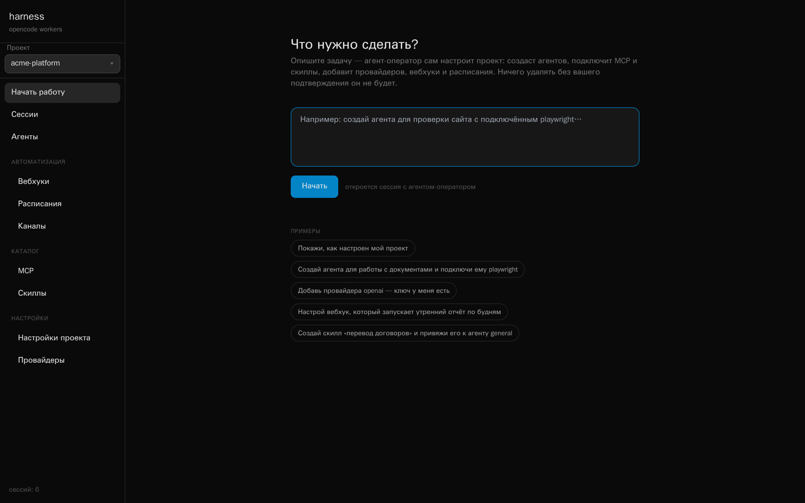

A self-hosted control plane for opencode.
One web UI over many sessions — each in its own Docker container — started by hand,
by cron, by webhook, or from a chat.
MIT licensed~6k lines of PythonSQLite, no queueBring your own keyLogin on the front door
Triggers
manualyou, in the web UI
schedulecron, with a timezone
webhookPOST from CI or anywhere
telegrama message to your bot
broker
FastAPI · SQLite
One container per session
code-reviewer own workspace · own port · own token
nightly-tests history kept on a docker volume
oncall-triage killed after its idle timeout
nothing leaves the machine — not the code, not the keys
The problem
Terminal agents don't schedule themselves
opencode is an excellent coding agent, and it lives in your terminal — one session,
in front of you, while you watch it. The moment you want a second one, or a nightly run,
or an agent that answers a webhook from CI, you are on your own.
The hosted products solve that, and charge for it: your code goes to their sandbox,
your automation lives behind their subscription. Vibeprod solves it on your hardware
instead. It is one FastAPI process with a SQLite file next to it — no queue,
no Kubernetes, no build step in the frontend.
What you get
A console for agents that keep running
Every session, in one place
Sessions are tagged by what started them, so a nightly cron run and a Telegram
question sit in the same list with the same transcript. A worker can be restarted
without losing the thread — history lives on a Docker volume, not in the container.
Sessions — labelled by trigger, live status on the right
Watch the agent think
The broker reads the worker's SSE stream and fans it out over a WebSocket.
Tool calls, reasoning blocks and todo lists appear as they happen; compact events
go to SQLite and the full transcript is kept when the session goes idle.
A code-review session — tool calls collapse, the answer stays readable
Agents defined once, reused everywhere
An agent is a row in SQLite — model, mode, temperature, permissions, system prompt —
plus the MCP servers and skills attached to it. At session start that becomes a stock
opencode.json and a set of markdown files in the worker's workspace.
Nothing proprietary: what the worker sees is ordinary opencode configuration.
Agents — model, attached MCP servers and skills on each card
Automation that ships with the box
Cron schedules carry a timezone and record every run. Webhooks give any external
system a URL to start an agent, optionally guarded by a secret, optionally blocking
until the answer is ready. Telegram runs inside the broker on long polling — no
public URL, no extra dependency — and streams the reply by editing the bot's message.
Point it at a notification chat and every scheduled or webhook run reports back
there, either always or only when it fails.
Schedules — cron with a timezone, next and last run on every card
Events that go out, not just in
Outgoing webhooks turn the broker into a source of events instead of only a target.
Subscribe a URL to session.completed, session.failed,
schedule.fired or webhook.received and it gets a POST with
the session summary. Set a secret and the raw body is signed with HMAC-SHA256.
Failed deliveries retry with backoff — 1s, 5s, 15s, 60s, 300s — and every attempt,
successful or not, stays in the per-webhook delivery log with its response code,
ready to be replayed by hand.
A worker's workspace disappears with the worker. Project files don't: every project
gets its own bucket in a MinIO container that comes with the compose file, browsable
and uploadable from the Files page. Agents reach the same storage
through the files MCP server in the catalog — one click to attach —
whose upload_file tool pushes a file out of the worker and returns a
link. Together with Playwright and the bundled screenshot-to-files
skill that is a complete loop: take a screenshot, put it in the project, answer with
the URL.
A browser, a database, an API — one click each
The MCP catalog holds reusable servers: ordinary local and remote ones, and Docker
services that Vibeprod starts on demand. The bundled Playwright service gives any
agent a real browser in its own container, on a private network the workers share.
MCP catalog — attach any entry to an agent from its card
Keys you can actually verify
Provider keys live in your database and are injected into workers as environment
variables. Check spins up a throwaway container with the same
opencode image and your key, confirms the provider registers, lists the models it
offers and makes a real generation call — the exact path a worker will take, so a
bad key fails here instead of halfway through a scheduled run.
Providers — verified against a real container, not a regex
A lock on the front door
Put a login and password in .env and the UI asks for them: pages and the
whole API move behind a signed cookie that lasts a week. Webhook endpoints keep their
own secret and the operator's MCP endpoint keeps its bearer token, so automation
carries on working. Leave both variables empty and nothing changes — no login at all,
the way it was. This is one shared account, not user management: there is no user
list, no roles, and no audit trail.
The unusual part
The agent configures the platform
Vibeprod ships with an operator agent that reaches back into Vibeprod itself through a
private MCP server living inside the broker. Describe what you want on the home screen —
“review agent for pull requests, give it GitHub, run it from a webhook” — and it
creates the agents, attaches the MCP servers and skills, adds the providers, checks the
keys, wires up the webhook and the schedule, and can put files into the project's storage
on the way. You watch it happen in a normal session transcript, and nothing gets deleted
without your say-so.
The operator's MCP endpoint is not in the catalog and cannot be attached to other agents:
its URL and bearer secret are injected only into operator sessions.
Use cases
Seven things people actually leave running
A control plane is only worth the disk it takes if something useful runs on it.
Each case below is one trigger, one agent and one place the answer lands — with the
exact wiring underneath, so you can rebuild it in an afternoon. The coloured dot is
the trigger: manual,
schedule,
webhook,
chat.
01
Webhook from CI
Every pull request is reviewed before a human opens it
A GitHub Action posts the PR number to a webhook URL. The reviewer agent checks out the
branch inside its own container, reads the diff through the GitHub MCP server, runs the
test suite, and writes the review back to the PR. With ?wait=180 the CI job
blocks until the review is ready and prints it in its own log — no polling, no second job.
How one run goes
CI fires the webhook
POST /api/webhooks/pr-review/run?wait=180 X-Webhook-Secret: •••• {"prompt": "Review PR #482"}
The broker starts a session
tagged webhook · own container · own port · own token
The agent does the work
code-reviewer · mcp: github, files · reads the diff, greps the repo, runs pytest -q
The answer goes back two ways
a comment on the PR, and session.completed to your outgoing webhook — signed with HMAC-SHA256, retried on failure
What lands in the pull request
pull/482 — feat: batch upload
code-reviewer · via vibeprod · 41s
Ran the suite on the branch: 128 passed, 1 failed. Three things worth a look.
blockerupload.py:88 — the S3 client is created per file; 400 files means 400 TLS handshakes.
watchtest_batch.py — the failing case is the empty-manifest path, not flakiness. Reproduced twice.
nitThe retry loop swallows KeyboardInterrupt along with everything else.
Illustration — the review text is whatever your prompt asks for
BeforeThe diff waits for whoever has time, and the tests run somewhere you have to go and look at.
AfterThe first pass is done by the time the notification arrives, on your hardware, on your key.
Alertmanager, Sentry or an uptime checker posts the firing alert to a webhook. The triage
agent pulls the recent logs, greps the repository for the failing symbol, lines it up
against the last deploys, then does two things a dashboard never does: it files an issue
in the tracker with issue_create, and it sends you the short version with
telegram_send. You wake up to a hypothesis, not a graph.
How one run goes
The alert fires
POST /api/webhooks/oncall/run {"title": "5xx rate 4.1%", "prompt": "…"}
The agent gathers context
logs, git log --since, the failing handler, the last three deploys
It files what it found
issue_create — title, findings, tags; visible in the Issues page a second later
And wakes you properly
telegram_send — or the notification chat, set to fire only on failures
What arrives on your phone
alert · api-gateway · firing 00:41
HTTP 5xx 4.1% on api-gateway
Started 00:38, right after a91f2c went out. All failures are on POST /v1/batch; everything else is flat.
The new code calls manifest["items"] without a default — the empty manifest from the mobile client raises KeyError and the handler turns it into a 500.
Filed as #137. Rolling back a91f2c should stop it; the fix is two lines.
00:41
roll it back and open a PR with the fix
00:42
code-reviewer is working…
Illustration — the reply continues the same session, so context is kept
BeforeA pager with a metric on it, and fifteen minutes of climbing into context before you can think.
AfterA named suspect commit, a filed issue, and a chat you can answer from bed.
Not a scraper guessing at markup: the bundled Playwright service gives the agent a real
browser in its own container. It opens the pages you care about — competitors' pricing, a
status board, your own checkout — takes screenshots, pushes them into the project's file
storage with upload_file, and delivers the digest with the images attached.
The screenshot-to-files skill ships with the box and wires those two together.
How one run goes
The schedule fires
cron 0 9 * * 1-5 · Europe/Moscow every run recorded, with its result
A real browser opens the pages
playwright service · own container on the vibeprod-mcp network · started on demand
Screenshots become project files
browser_take_screenshot → upload_file → a link that outlives the container
The digest arrives with pictures
telegram_send_file — text and images, straight into the chat
What the agent sees, and what you get
competitor.example/pricing
screenshot
Team plan$29$24 / mo
Morning digest · Fri
Competitor dropped the Team plan from $29 to $24 and moved SSO out of Enterprise. Screenshot attached.
Your status page is green; the checkout flow completed in 3 of 3 attempts.
pricing-2026-08-16.png · 214 KB09:00
Illustration — the same files stay browsable on the Files page
One session per repository, each in its own container: bump the dependencies, run the
suite against the bumped tree, sweep the TODOs, look for the dead module nobody has
imported since March. Nothing is pushed without your say-so — the output is a set of
issues in the tracker, written by the agent through issue_create, waiting
for you in the morning. A build that goes badly wrong takes its container with it.
Add a Postgres MCP server to the catalog once, attach it to an agent with one click, and
the weekly report writes itself: query, compare with last week, put the CSV in the
project's storage, send the short version to the chat. The database credentials sit in
your own catalog entry and the rows never leave the machine — the model sees only what
the agent puts in its answer.
How one run goes
Monday morning, before the standup
cron 30 8 * * 1 · Europe/Moscow
The agent queries directly
mcp postgres from the catalog · read-only role, your credentials
The raw table is kept
upload_file — weekly CSVs pile up in the project, one link each
You get the sentence, not the spreadsheet
what moved, by how much, and what looks wrong
The run, and its output
-- what the agent ran
SELECT date_trunc('day', created_at) d,
count(*) signups
FROM users
WHERE created_at > now() - '7 days'::interval
GROUP BY 1 ORDER BY 1;
Signups, last 7 days · +18% week over week
MoTuWeThFrSaSu
Weekend spike is one referral source, not organic — worth checking before anyone celebrates.
signups-w33.csv · 12 KB
Illustration — the chart stands in for whatever your prompt asks the agent to say
Telegram runs inside the broker on long polling — no public URL, no tunnel, no extra
dependency. The first message opens a session, the next ones continue it, and the answer
streams by editing the bot's message. /agents lists what you have,
/agent 3 switches, /new starts fresh, /abort stops
a run. Open the web UI afterwards and it is the same session, with the full transcript.
How it behaves
Long polling, not a webhook
the bot token and the allowed user ids live in the UI; the box stays closed to the internet
One thread, one session
history lives on a docker volume, so the worker can restart under you
The six cases above are made of agents, MCP servers, skills, webhooks and schedules — and
you do not have to click any of it together. The operator agent reaches back into Vibeprod
through a private MCP server inside the broker: it creates the agent, attaches the servers
and skills, adds the provider and verifies the key in a throwaway container, then wires the
webhook and the schedule. You watch it happen in a normal transcript, and nothing is
deleted without your say-so.
What you type
localhost:8000 — new session
“Make me a review agent for pull requests: give it GitHub, run it from a webhook
called pr-review, and send the result to my Telegram. Use DeepSeek —
here is the key.”
The home screen — plain language, no forms
Worth knowingThe operator's MCP endpoint is not in the catalog and cannot be attached to other agents: its URL and bearer secret are injected only into operator sessions.
What exists a minute later
agent code-reviewer — mode, model, permissions, system prompt
mcp github attached, token stored
provider deepseek — key verified in a probe container, models listed
webhook pr-review with a fresh secret
telegram notifications on, failures only
Illustration — every object shows up in the UI as if you had made it by hand

The real home screen — this is where the sentence above goes
Your case is probably four objects and one cron line
Four triggers, one container per session, three ways for the answer to come back.
Everything above runs on one FastAPI process and a SQLite file — on your machine,
on your keys.
This is a small project, not a competitor to funded platforms on breadth or maturity.
It wins on one axis — self-hosted automation with no cloud tier — and loses on another:
the login it now has is a single shared account, with no users, roles or audit trail
behind it.
Vibeprod
OpenHands
opencode
Goose
Devin · Jules · Codex cloud · Cursor agents
License
MIT
MIT
MIT
Apache-2.0
Proprietary
Self-hosted
Only option
Yes, plus a managed cloud
Yes
Yes
No
Web UI over many sessions
Yes
Yes
No — TUI and serve API
No — desktop and CLI
Yes, vendor-hosted
Container per session
Yes
Yes
Runs on the host
Runs on the host
Vendor sandbox
Cron schedules
Built in
Cloud tier
No
No
Varies
Inbound webhooks
Built in
Cloud tier
No
No
Varies
Outbound webhooks
Built in
Varies
No
No
Varies
Chat channel (Telegram)
Yes
No
No
No
No
MCP support
Yes, shared catalog
Yes
Yes
Yes
Varies
Agent that configures the platform
Yes
No
No
No
No
Bring your own key
Yes
Yes
Yes
Yes
Subscription
Git and pull-request workflow
Via the agent and git
First-class
First-class
Yes
First-class
Auth, multi-user, RBAC
One shared login, no roles
Enterprise tier
n/a
n/a
Yes
Maturity
Early
Large, funded
Very large
Linux Foundation
Commercial
Compiled August 2026 from public documentation. Hosted products move quickly —
check the vendor's own pages before making a decision on this table alone.
Pick Vibeprod if
You want agents on your own hardware, started by cron, webhooks and chat, reporting
back over webhooks and Telegram, with per-session isolation and API keys that never
leave the box.
Pick something else if
You need per-user access control for a team, a hosted service with an SLA, or a
mature pull-request review workflow out of the box.
Quick start
Running in about a minute
You need Docker and Python 3.11+ — or just Docker. The first start pulls the opencode
image and builds a worker image on top of it, with git and openssh so agents can work
with repositories.
On the host
# clone, configure, run
git clone https://github.com/katskov-dev/vibeprod.git
cd vibeprod
cp .env.example .env # add one provider key
./run.sh # → localhost:8000
In a container
# same thing, dockerised
git clone https://github.com/katskov-dev/vibeprod.git
cd vibeprod
cp .env.example .env
docker compose up --build
Ask for a login, and for file storage
# .env — both empty means no login at all
VIBEPROD_LOGIN=admin
VIBEPROD_PASSWORD=change-me# project files live in MinIO; compose brings it up on loopback
docker compose up -d minio # API 9000 · console 9001
Start an agent from anywhere
curl -X POST http://localhost:8000/api/webhooks/pr-review/run \
-H 'X-Webhook-Secret: …' \
-H 'Content-Type: application/json' \
-d '{"prompt": "Review the diff in PR #482"}'
Before you put this on a server
The login is a single shared password, and the broker drives the Docker daemon — so
anyone who gets past it can run code as root on the host. Compose binds the port to
127.0.0.1 for that reason, and leaving VIBEPROD_LOGIN unset
means no login at all. Treat the login as a lock on an internal door, not as a reason
to expose the port: to reach it remotely, still put it behind a reverse proxy with TLS,
or a VPN. The details are in
SECURITY.md.